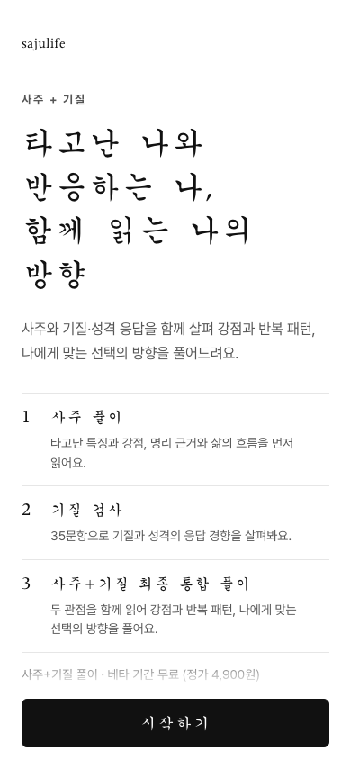
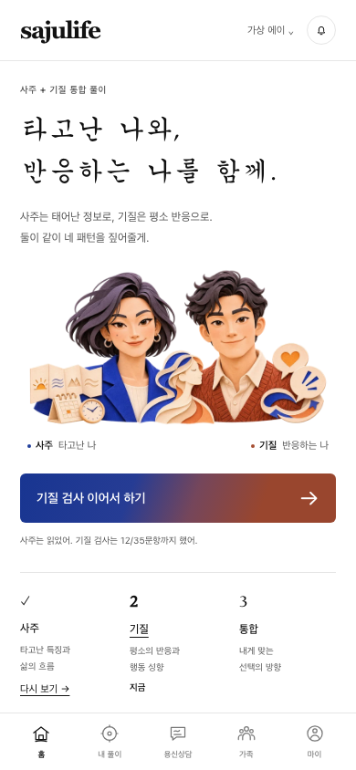

한 장의 표지에서, 두 해설자가 있는 속지로.
흰 바탕 · 검정 궁서 제목 · 같은 구분선과 여백. 색은 캐릭터와 통합 버튼에 집중합니다.
로그인 전 — 현재 화면 유지
실제 로그인 전 화면 캡처. 문구·서체·바탕을 바꾸지 않습니다.

로그인 후 — 처음 시작하는 홈
손 없는 정면 캐릭터 · 두 색 버튼 · 현재 홈의 세 단계와 5탭
이어서 보기 — 진행 중인 홈
같은 화면에서 버튼과 진행 상태가 이어집니다. 가상 상태 예시입니다.
